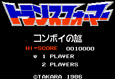

Transformers - Nintendo Games

From Doug Cranston:
This game is a side-scrolling action game where you control Optimus Prime and take on the Decepticons by yourself.
It is very unfair because you have a weak weapon, can only take one hit, and have no continues.
Anime Video Game Resource Center © 1998 by Luis A. Cruz